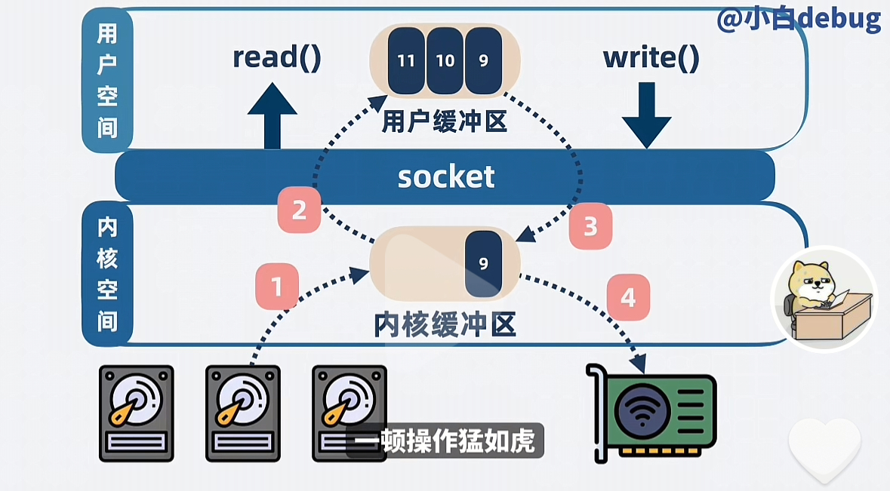
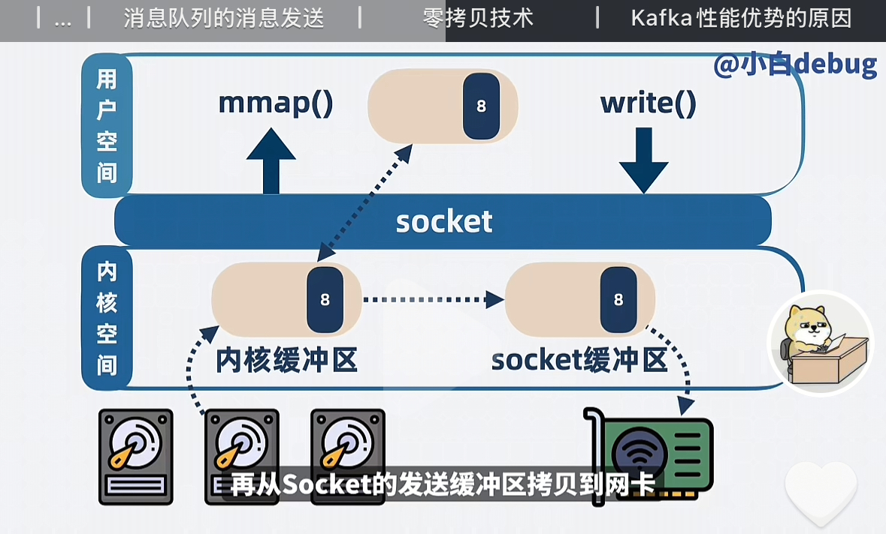

Kafka
Introduce
我们按照从头开始介绍 Kafka 消息队列。
-
什么是消息队列
首先，消息队列模型我认为可以简单的分成三个部分，
consumer,producer和messageQueue.在三个部分组成了生产者和消费者的消息队列模型。最简单的思路就是，consumer从mq中消费获取消息，但是producer生产消息，并且发送到mq中去。 -
为什么需要消息队列
一个很现实的情况就是，消息的提供者服务A 可能一秒生产
200个消息，但是 服务B 可能一秒只能消费100个消息。那么我们就需要消息队列来存放这些还没有被轮到消费的消息。这样子就可以起到削峰填谷的作用。所以我们加一层中间层 kafka -
kafka 的架构
kafka 的消息队列本质就是一个链表（队列），上面存放着的是每个已经标上序号的消息
offset,方便我们记录位置。B服务根据自己的能力消费消息。
可能会出现以下的几种问题，我们从问题来展开进行优化:
-
由于消息存储在B 服务的内存里。如果此时 B服务更新重启，那么来不及处理掉的消息应该怎么解决呢？
这个比较简单，我们将这个内存中的消息队列单独的新开一个进程来进行管理。
-
高性能怎么实现呢？
我们看上面截止 Step1 的架构，其实已经是一个简陋的消息队列了，但是通常情况会遇到消费者的消费速度赶不上生产者的生产速度，所以这个时候，我们就可以 拓展消息队列的消费者和生产者，从而提升消息队列的吞吐量。
-
那么如果多个消费者 去抢夺一个消息队列，其实效率也是低下的，我们可以将消息进行分类，避免他们发生争抢，同时我们也可以保证消息处理的效率。
- 这个时候就需要我们将
kafka中的消息分类，分成多个topic,然后不同的topic交由不同的消费者去处理，生产者将相同的消息存放在相同的topic中。这样子就可以避免消费者之间的相互抢夺了。 -
问题 ： 问题又来了，如果单个 topic 的消息还是过多，我们应该如何处理呢?
我们会选择使用 分区 的办法来处理，也就是将一个 topic 中的消息分成多个 partition分区，每一个消费者来负责一段的
partition,大大的降低了互相之间的争抢
- 这个时候就需要我们将
-
高扩展性 -> 高扩展性其实就是和 分布式 进行联系
因为我们会遇到一个很现实的问题，如果我们都将
partition置于同一台机器，优点是延迟会比较小，但是缺点也很明显，拓展性很差，会导致单机的 CPU 和内存的占用过高，从而性能下降。所以我们在这里考虑 分布式 来进行提高拓展性- 所以我们可以将多个 partition 分布到不同的机器上，那么不同的机器其实就分别代表着 不同的Broker.我们通过增加 Broker 来提高消息队列处理的性能问题
-
高可用
我们依旧来考虑一个问题，就是如果 某个 Broker 挂了，那么这个时候怎么办？那么这个时候就会考虑主从节点来进行备份了。
- 我们对每个 Broker 多加几个副本，也就是从节点，简称 replicas, 将他们分成 Leader 和 Follower,Leader 来负责消息队列中消费者和生产者的读写请求，而 Follower 来负责备份数据。这样子就可以保证 高可用 了。-> 分散到不同的 Broker 上。
-
持久化
如果所有的 Broker 都挂了，那么我们可能还需要考虑的问题就是因为我们存储在 Broker的内存中，那么我们需要将他们定期的持久化到磁盘中，这样才能保证数据不会丢失。
- 过期淘汰策略(retention policy) : 磁盘总是有限的，一直往磁盘中添加消息进行同步，肯定会导致磁盘空间不够用，所以我们需要定期的将过期的消息进行删除。可以设置一个过期时间，或者是达到多少条消息进行删除。这些就是我们需要考虑的 过期淘汰策略 了。
-
Consumer Group
不同消费者组维护自己的消费进度，互不打搅
-
Zookeeper
我们现在回过头来看，其实是有很多的组件了，那么就需要对他们进行管理和协调，这个时候我们就需要一个协调者来进行管理了。这个协调者就是 Zookeeper.它主要负责 Broker 的选举，负载均衡，配置管理，集群管理等功能。Zookeeper 作为一个分布式协调服务，可以帮助我们更好的管理分布式系统中的各个组件。
- Zookeeper 可以定期的和这些 Broker 进行通信，从而来获取整个消息队列集群的状态，来监听消费者的消费进度，以及包括各个 Broker 的状态，是否会出现宕机的情况。这样子就可以保证整个消息队列的高可用性和高扩展性了。
底层存储
Kafka 的底层存储，首先我们知道的是在 topic 中的理论处理的最小单位是 partition,但是事实上其实 partition 中的最小单位是 Segment,可以认为是一些小文件。本质上就是需要将数据写入到某个 Segment 文件下。
我们知道的是 在磁盘中的读写速度和读写的方式是有差别的，最快的办法就是 顺序存储，但是 Kafka 对于每个 Segement 的文件都是采用的是同时存储，但是这个问题就来了，如果对多个文件进行同时的写，那么就会导致磁盘的读写速度变慢。虽然每个文件都是顺序写，但是不同的文件存储在磁盘的不同位置，就会导致磁盘的读写头来回的跳动 变成了近似的 随机读写，从而降低了读写速度。
应用场景
主要的目的就是 削峰填谷
- 秒杀活动
- 大数据的异步同构
- 日志的异步同构
零拷贝

我们通过上图来进行分析:
用户如果想要将数据发送到网络，其实需要发生上图的过程。 2次系统调用 和 4次的拷贝
具体的过程如下: 1. 我们在用户程序向系统发起了系统调用 Read() 想要读取磁盘中的数据 2. 内核空间接收到了系统调用请求，首先将数据拷贝到 内核缓冲区，然后从 内核缓冲区 拷贝到 用户空间缓冲区 3. 此时，用户程序会调用 Write() 的系统调用，将数据从 用户空间缓冲区 拷贝到 内核缓冲区 中 4. 从 内核缓冲区 拷贝到 网络设备缓冲区 中，也就是网卡中。从而完成可以将数据发送到网络。
但是我们纵观上面的过程，其实拷贝的次数过多了，导致了性能的下降。
mmap
mmap 其实是操作系统中的一个方法，目的是可以将 内核空间 中的缓冲区映射到了 用户空间，可以减少一次拷贝到过程。我们可以如下图进行所示:

我们同样需要两次 系统调用，但是 这次 mmap 的系统调用可以直接的省去了从 内核缓冲区 拷贝到 用户态缓冲区 这个过程。然后可以直接在内核缓冲区拷贝到 Socket 缓冲区，然后从 Sokect 缓冲区拷贝到网卡中。这样子就减少了一次拷贝的过程。
SendFile
我们继续优化，首先要明确的是， 零拷贝 并不是指在用户态程序要发送消息给网络的过程零拷贝，而是不需要从内核态拷贝数据到用户态这个过程。
SendFile 也是操作系统提供的一种系统调用的方法，目的就是用来发送数据的。 在用户程序中发起 sendFile 这个系统调用的时候，就可以将磁盘中的文件拷贝到 内核缓冲区 中，同时可以将 内核缓冲区 的数据直接的拷贝到网卡。
综上 这个过程中其实发生了 一次系统调用，和两次的拷贝过程。这样子就减少了一次拷贝的过程。
这里的 零拷贝 其实指的是 0CPU 拷贝，也就是不需要 CPU 的参与，直接的通过 DMA 来进行数据的传输。不耽误 CPU 跑程序。
Q1 为什么 Kafka 高性能？比 RocketMQ 高性能？
理由就是虽然都使用的是 零拷贝 技术，但是二者其实使用的系统调用是不同的。 两者的 零拷贝 对应的含义也是不同的:
-
RocketMQ: 零拷贝指的是 用户态 和 内核态 之间的零拷贝，他使用的是系统调用 mmap -
Kafka: 零拷贝指的是 内核态 和 内核态 之间的零拷贝，也就是 0CPU 拷贝，利用 DMA 直接来进行管理和拷贝数据，而不耽误 CPU 的运行。而 Kafka 使用的是 sendFile 系统调用。
Q1.1 为什么 RocketMQ 使用 mmap 而不是 sendFile 呢？
我们或许可以从两个函数的调用方法可以看出端倪:
1 2 3 4 | |
-
mmap 返回的是数据的具体内容，应用层能获取到消息的内容，并且能进行逻辑处理。 这个就和 RocketMQ 在消息队列中的功能性做加法形成了闭环，举个简单的例子，我们会考虑到 死信队列，那么就需要知道这个消费失败的消息的具体内容， 并且将它放到对应的队列中。而 Kafka 就需要程序员自己来实现这样的功能。 Rocket 可以算是在 性能和功能性上做了一个折中
-
sendFile 返回的是发送的字节数，应用层只能知道发送了多少字节的数据，但是不能获取到具体的内容，也就是说应用层不能对消息进行逻辑处理。sendFile 会使得应用层不知道具体发生了什么数据，不能进行对应的逻辑处理，只是完成了数据的发送这个功能。
Q2 什么时候用 Kafka ? 什么时候用 RocketMQ ?
在大数据的时候，我们通常会使用 Kafka,追求极致的性能,但是其他的时候，尤其是和业务的逻辑处理相关的时候，我们尽可能的会使用 RocketMQ,因为它提供了更多的功能性，比如 死信队列，消息回溯等功能。